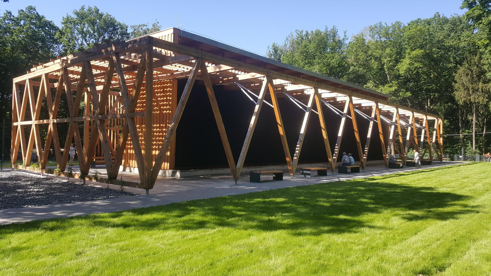
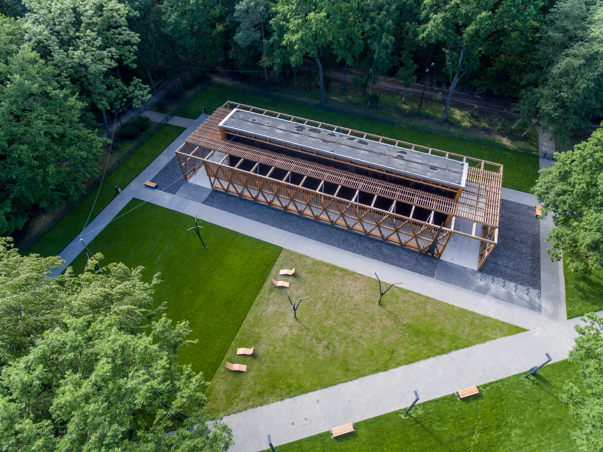
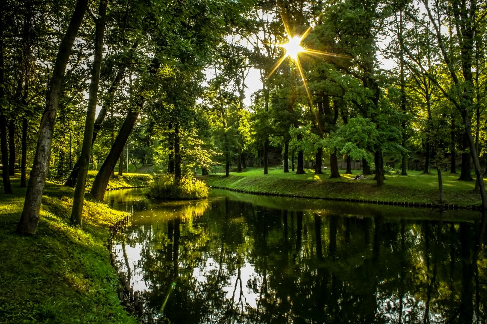
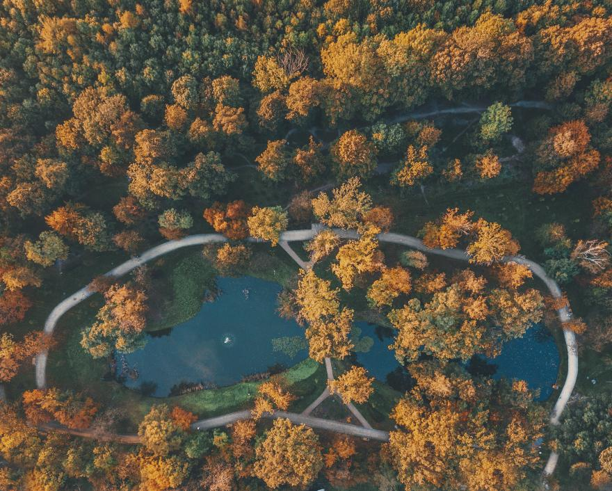
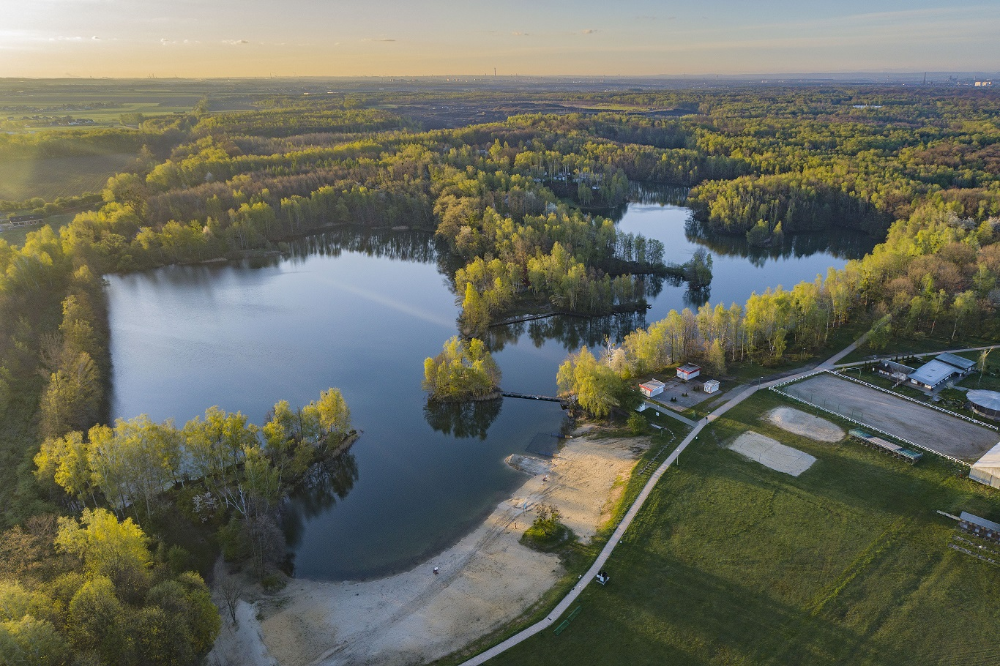
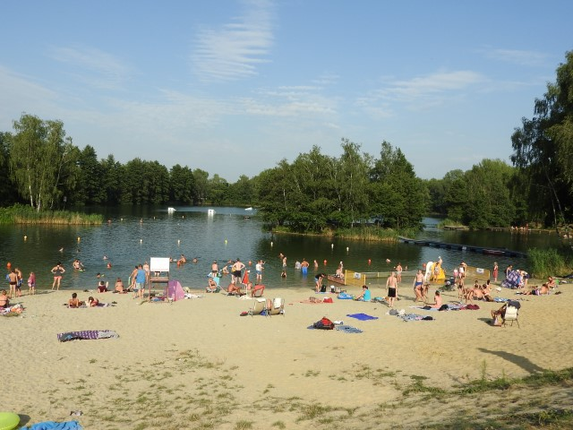

Tężnia Solankowa

Miejsce to znajduje się wewnątrz "Parku Kultury i Wypoczynku" przy ulicy Chorzowskiej i jest to publiczny obiekt bez żadnych opłat za wejście. Tężnia ma pozytywny wpływ dla zdrowia na drogi oddechowe człowieka, działa podobnie jak słone, nadmorskie powietrze. Wiele osób przychodzi tam dla relaksu i poprawy samopoczucia, a poza tym pomaga w leczeniu chorób układu oddechowego, wzmacnia też system odpornościowy, wspomaga leczenie nadciśnienia tętniczego i alergii, pomaga też wypocząć i zregenerować siły.

Jest ona jednak otwarta tylko sezonowo, więc zanim się tam wybierzesz, lepiej sprawdź aktualny jej stan. Nawet jeśli gdyby się okazało, że sama Tężnia jest zamknięta, otaczający ją las nadaje się świetnie do długich, przyjemnych spacerów lub jazdy na rowerze.
Park Szwajcaria

Park Szwajcaria to o wiele mniejszy park niż ten, o którym wspominałem powyżej, jednak nie brakuje mu urody. Znajdują się w nim dwa stawy połączone mostem, a w środku jednego z nich znajduje się mała wysepka. W różne pory roku można zachwycać się tu sezonowymi, pięknymi sceneriami.

Droga jest również przystosowana do jazdy na rowerze. W parku znajduje się także plenerowa siłownia. A fakt, że jest mniejszy, oraz mniej znany może być nawet zaletą, jeżeli ktoś szuka miejsca do odizolowania się i wyciszenia.
Poza tym niedalego obok parku znajduje się restauracja o takiej samej nazwie. Jeżeli jesteś więc turystą, może być wygodnie się tam zatrzymać.
Siedem górek

Jest to nietypowe miejsce, jako że wśród wokoło płaskich terenów ni stąd, ni zowąd wyrasta z ziemi 7 górek następujących po sobie. Górki te leżą również w środku "Parku Kultury i Wypoczynku", dlatego moim zdaniem górki te wyglądają wyjątkowo ciekawie, jako że są w całkowicie leśnej scenerii.
Szczególnie jednak jest to lubiane miejsce przez rowerzystów, którzy szukają również małej dawki adrenaliny. Górki te nie są jakieś duże ale wystarczają by zdobyć dobrą prędkość. Jedna górka jest jednak dałkiem wysoka (ok. 5m) i ma szybki, długi zjazd po jednej ze stron co może się spodobać wielu nastolatkom.
Jezioro Czechowickie

Czechowickie jezioro posiada wokół siebie dużo różnych atrakcji. Bary, pola do gry w siatkówke, ośrodki wypoczynkowe, park linowy, plac zabaw itd...
Jednak oczywiście główną atrakcją jest plaża i samo jezioro. Jest to świetne miejsce na wypoczynek letni, a nawet wiosenny czy jesienny.

Samo jezioro jest całkiem czyste, a temperatura w sezonie zazwyczaj też jest dobra. Poza tym można np. wypożyczyć kajak lub rowerek wodny. Ogólnie jest tutaj bardzo dużo sposobów na spędzenie czasu. Trzeba jedynie zapłacić za wejście, w zależności w jakich godzinach się tam chcemy wybrać. Jednak ceny nie są jakieś duże, więc jest to naprawdę świetne miejsce.